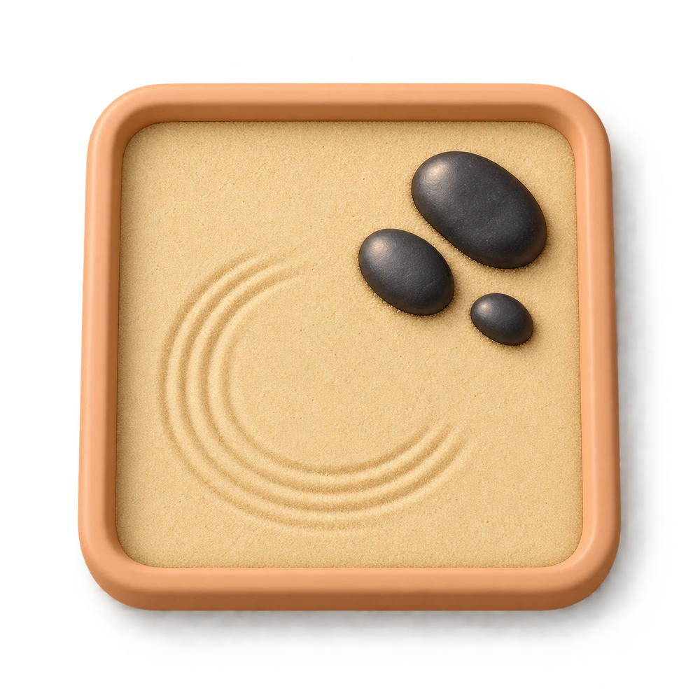

Kitchen garden
Cherry tomatoes and sweet peppers in a sunny planter.
Grow cherry tomatoes, pick berries and listen to birds. A few peaceful minutes to feel a little closer to nature.
Free to start · Full garden €3.99, one-time purchase.
Grow at your own pace A sunlit vegetable bed, colourful flowers or quiet patterns in the sand. Choose the little ritual you need today.
Cherry tomatoes and sweet peppers in a sunny planter.

Cucumber, kale, peas, dill and broccoli for your bowl.

Strawberries, raspberries and blueberries to pick by touch.

Lavender, petunias and marigolds for your own bouquet.

Bird of paradise, banana, dragon fruit and pineapple.

Rake gentle patterns, smooth the sand with your palm and arrange polished black pebbles.
A close, simple view of the bed or pot you are caring for.
A compact garden when folded, and more room when unfolded.
Room for your plants, garden navigation and a sunlit table.
One purchase unlocks every garden, extra plants and decorations. No subscription. No ads.
Planned euro price. The App Store shows the local price before purchase. Purchases are not available on this website.